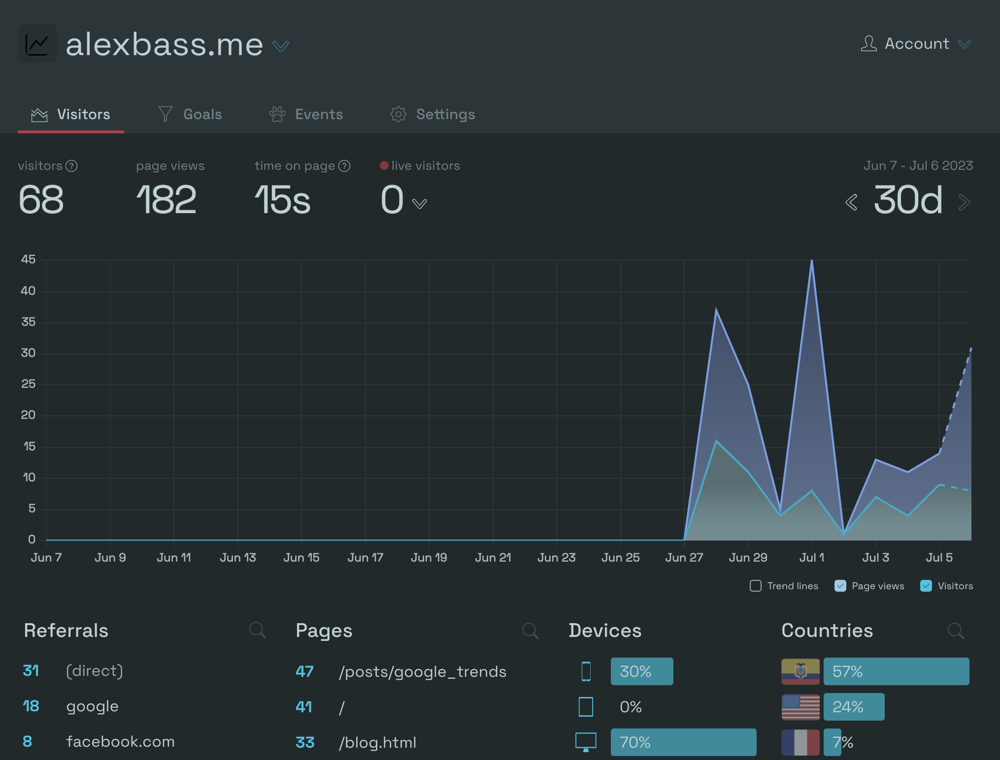

Alternative to Google Analytics for Quarto Folks

Introduction
As you probably know, Google Analytics has changed and become more complicated to the dismay of many people (now called Google Analytics 4). Recently, There have also been government bans over privacy concerns from Google Analytics. I am not extremely knowlegdable about all things data privacy, but really just wanted another analytics platform that was simple and delivered what I needed to track traffic ethically on this website you are on now.
Also, looking at the quarto docs, there is a place to initialize google analytics, but does not mention other services. So, I thought I would share this short article as an example of using another service for those who might be interested.
Simple Analytics
Simple Analytics was easy to set up and delivers exactly what I wanted to see in a clean dashboard that worked out of the box. There are options to customize specific goals or events of special interest. Also, they have the option of sending a weekly email summary of visiting stats.
If you have a quarto website, I simply added the excerpt below to my _quarto.yml file. This uses the body-footer argument which accepts the required html snippet for the service. And that’s it! This will include the html in every page on the website, so the traffic for every page will be tracked.
website:
body-footer: |
<!-- 100% privacy-first analytics -->
<script async defer src="https://scripts.simpleanalyticscdn.com/latest.js"></script>
<noscript><img src="https://queue.simpleanalyticscdn.com/noscript.gif" alt="" referrerpolicy="no-referrer-when-downgrade" /></noscript>After this is inserted and you set up an account, it starts automatically tracking everything in your dashboard. Here is an example of what mine looks like:

It has most visitor data fields you might be interested in like Country, pages visited, referral, device type and browser.
There is a subscription required after a 14 day trial period which is $8 a month with an annual subscription. This may not be worth it to some people, but just sharing a simple solution that I found helpful. I beleive that there is a basic free version after the trial period ends, but not sure what this entails.
If you would like to see an implementation in my quarto website, feel free to browse my repository here and remember to look for the _quarto.yml file!
Let me know of thoughts or questions below…